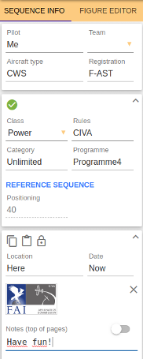
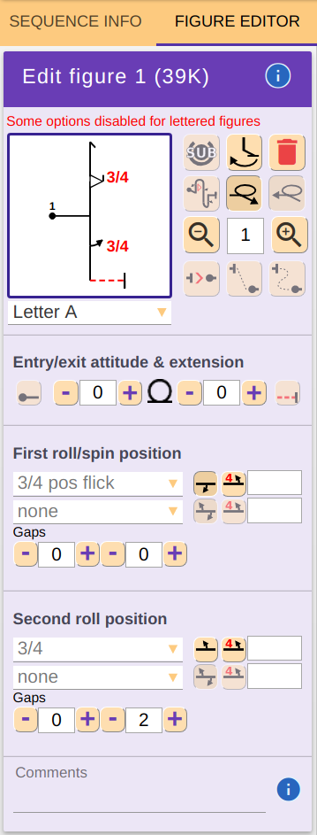
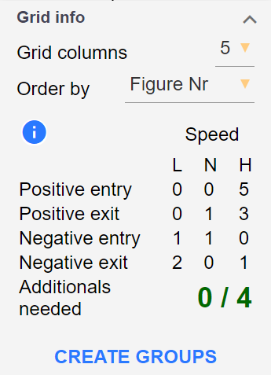
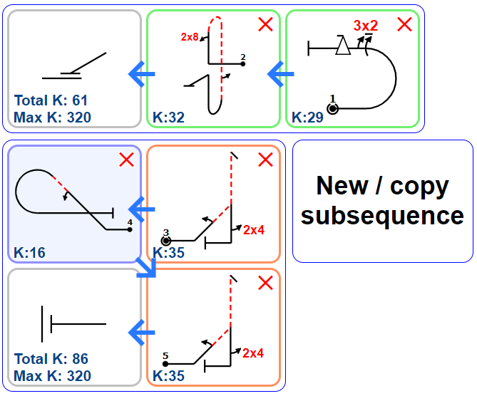
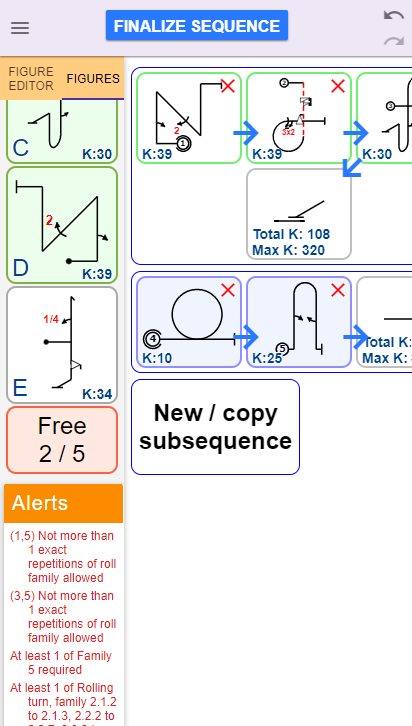

1. Allgemein
OpenAero ist eine webbasierte Software zum Erstellen und Prüfen
von Kunstflugsequenzen. Es ist unter
OpenAero.net
auffindbar und läuft in Ihrem Web-Browser. Dies erlaubt den
Zugriff von praktisch jedem Computer, Tablet oder Smartphone.
Für das beste Nutzungserlebnis wird der
Google Chrome
-Browser empfohlen, wobei alle neueren Browser (seit 2016) korrekt
funktionieren sollten. Es ist generell nützlich, OpenAero im
Vollbildschirm-Modus (durch Drücken von F11) zu verwenden.
Sobald Sie online auf OpenAero zugreifen, erscheint die neueste,
stabile Version von OpenAero automatisch. Haben Sie dann einmal
openaero.net
besucht, steht Ihnen die zuletzt aufgerufene Version auch offline zur
Verfügung.
Wenn Sie OpenAero auf einem Tablett oder Smartphone benutzen,
wählen Sie Smartphone-Layout in den Einstellungen aus,
um die Benutzeroberfläche an das kleinere Display anzupassen.
Wann immer Sie online OpenAero erneut aufrufen, sollte es
automatisch auf die neueste, stabile Version updaten. Falls Sie
vermuten, dass dies einmal nicht der Fall ist, können Sie dies
in Hilfe, Über überprüfen. Falls dort zu sehen ist,
dass sie eine veraltete Version benutzen, könnte es helfen, Ihren
appCache zu leeren:
Geben Sie dazu chrome://appcache-internals in
der Addresszeile Ihres Web-Browsers ein und entfernen
Sie alle Einträge die OpenAero enthalten.
iOS, Android und Windows 10 App
Eine OpenAero-App ist für die verschiedenen Platformen verfügbar.
Neben dem normalen Funktionsumfang, bietet die App:
- verbesserten Umgang mit .seq Sequenz-Dateien
- garantierte Offline-Verfügbarkeit
- Unterstützung der OpenAero-Entwicklung mit Ihrem finanziellen Beitrag
- einige nur in der App erhätliche Features


Auch wenn es neben OpenAero keinerlei andere Software bedarf, um
regelkonforme Kunstflugprogramme zu erstellen, wird empfohlen, stets
eine offizielle und aktuelle Ausgabe des
Aresti-Katalogs
zum Prüfen der Programme zur Verfügung zu haben.
Dieses Handbuch richtet sich an Benutzer von OpenAero. Falls Sie sich
für die Entwicklung von Ergänzungen zu OpenAero interessieren,
inklusive nationaler Regeln, dann besuchen Sie bitte die
Entwickler-Wiki-Seite.
2. Sequenzerstellung und -prüfung
Kunstflugsequenzen können in OpenAero auf verschiedene Weisen
erstellt werden:
- durch Auswählen und Bearbeiten von Figuren mit dem
Figurgestalter, was in diesem Kapitel erklärt ist;
und/oder
- mit Hilfe des
Sequenz-Designers;
und/oder
- durch Eingabe von
Sequenz-Code
in der Eingabezeile.
2.1. Zu Beginn der Sequenzerstellung

Wenn Sie eine Figuren-Datei der Bekannten oder Unbekannten Kür
öffnen, werden Sie gefragt, ob sie den
Sequenz-Designer starten möchten.
Falls Sie dies bestätigen, füllen Sie die Sequenz-Information später aus.
In jedem anderen Fall, beginnen Sie immer mit dem Ausfüllen der
Sequenz-Information im zugehörigen Panel auf der linken Bildschirmseite.
Die Informationen zu Regeln, Kategorie und Programm
werden verarbeitet, um die Gültigkeit der Sequenz zu bestimmen.
Falls gerade die Regelprüfung für die gewählte Kombination aktiv ist,
wird dies mit im oberen Teil
der Regelkarte angezeigt. Andernfalls erscheint
und die Sequenz wird nur
auf Übereinstimmung mit dem Aresti-System überprüft.
Der Info-Kasten für die Wettbewerbsinformation kann benutzt werden,
um Ort, Datum, Logo und Notizen des Wettbewerbs auf den Formularen
festzuhalten. Es ist möglich, diese Information zu kopieren,
einzufügen und zu sperren. Falls gesperrt, kann die Information
nicht geändert werden, auch dann nicht, wenn eine neue Sequenz
geöffnet wird.
Sie können eines der vorhandenen Logos auswählen, oder Ihr eigenes
hinzufügen. Maximal 3 Logos können hinzugefügt werden. Falls Sie ein
weiteres hinzufügen wollen, müssen Sie eines der anderen löschen.
Sequenz-Eingangsrichtung
Sie können im Sequenz-Menü auswählen, ob anstatt in Hauptrichtung
(gegen den Wind) die Sequenz mit Rückenwind oder quer zur
Hauptrichtung gestartet werden soll. Dies kann später jederzeit
wieder geändert werden.
 Öffnen Sie den Figurgestalter-Tab und klicken Sie auf
Figur hinzufügen.
Öffnen Sie den Figurgestalter-Tab und klicken Sie auf
Figur hinzufügen.
Eine Figurauswahl erscheint, in der Sie zunächst die Figurengruppe
(zum Beispiel "1.2 Zwei-Linien-Figuren") und dann die Basisfigur
auswählen. Oberhalb und links der Figurauswahl werden die
Aresti-Zeilen und -Spalten-Nummern angezeigt.
An jedem Punkt innerhalb der Figur, an dem sich die Fluglage ändert,
wird das Platzhaltersymbol einer halben Rolle angezeigt und
standardmäßig mit der Basisfigur miteingefügt, was wiederum leicht
zur Rolle der Wahl im Figurgestalter geändert werden kann.
Falls bereits Figuren in der Sequenz vorhanden sind, kann im Figurgestalter
gewählt werden, an welcher Stelle die nächste Figur eingefügt werden
soll. Figuren, die für die aktuelle Stelle passen, also die passende
Ein- und Ausgangsfluglage haben, sind in der Figurauswahl dann grün hinterlegt.

Wenn die Regeln zur Sequenzprüfung aktiv sind, die die Verwendung von
bestimmten Figuren verbieten, werden diese Figuren in der Figurauswahl
nicht gezeigt. Um sie dennoch zu zeigen, muss dies mit dem Schalter
Regel-illegale Figuren ausblenden deaktiviert werden.
Wenn eine Figur hinzugefügt oder
ausgewählt wird, wird sie in
magenta auf der Zeichnugnsfläche dargestellt. Ihre zugehörigere
Zeichenkette in der Sequenzzeile ist dann ebenfalls in magenta
gehalten.
Die Miniform A wird immer automatisch aktualisiert, um die
Aresti-Katalognummern sowie zugehörige K-Faktoren der Basisfiguren
und der Rollen- bzw. Trudelelemente anzuzeigen.
Basisfiguren und Rollen- bzw. Trudelelemente, die gemäß den gewählten
Sequenzregeln nicht 'legal' sind, werden mit 0 K in
Miniform A angezeigt.

Die aktuelle Figur wird außerdem im Figurgestalter angezeigt, wo
sie wie folgt bearbeitet werden kann:
- Setzen der Figur als Beginn einer neuen Untersequenz
- Schwenken der gezeichneten Querrichtung
- Löschen der Figur
- Alternieren der Haupt- und Querrichtungen für Figurein- und -ausgang
- Größer und kleiner Skalieren der Figur
-
Verschieben der Figur zu einer anderen Position - ohne oder mit
gerader oder geschwungener, gestrichelter Verbindungslinie
-
Verlängern oder Verkürzen der Linienstücke direkt nach/vor den
Ein-/Asugangssymbolen, sowie vor oder nach den Roll-/Trudelsymbolen.
-
Ändern der Ein- und Ausgangsfluglage (bauch- oder rückenlagig)
-
Zuweisung eines Figuridentifikationsbuchstaben A bis J oder
Markierung als Verbindungsfigur mit Buchstaben L
-
Hinzufügen/ Entfernen / Ändern von Rollen- / Trudelelementen, und:
-
Alternieren Ihrer gezeichneten Drehrichtung und des
Rollen-Texts zum Vermeiden von überlappenden Rollen-Text
mit anderen Elementen
- Alternieren der Rollen-Text-Anzeige
-
Zuweisung eines Kommentars, der nachfolgend zum Rollentext
angezeigt wird, z.B. "rechts"
Wenn die Sequenzregeln aktiv sind, werden nur regel-konforme
Rollenelemente im Dropdown-Menu angezeigt. Trotzdem kann es sein,
dass darüberhinaus bestimmte Kombinationen von Rollen-/Trudelabfolgen
nicht erlaubt sind. In diesem Fall wird dann eine Alarmmeldung
unterhalb dem Figurgestalter ausgegeben.
- Hinzufügen / Entfernen / Ändern von Figurkommentaren
Manche dieser Optionen sind nicht für Figuren verfügbar, die
einen Identifikationsbuchstaben erhalten haben, um zu vermeiden,
dass diese Figuren dann abgeändert werden können.

Eine andere Möglichkeit, die Erscheinung der Figur zu ändern besteht
im Benutzen der "Figuranfasser". Diese sind die blauen, halb transparenten
Kreise, die auf jedem Linienstück der Figur erscheinen, wenn sie ausgewählt,
also in magenta dargestellt, ist. Durch Anklicken und Ziehen kann
so ein Linienstück komfortabel verlängert oder verkürzt werden.
Wenn eine Figur ausgewählt ist, erscheint ebenfalls ein Lupen-Symbol
in der rechten oberen Ecke der Figur. Wird dies angeklickt und gezogen,
wird die Figur größer oder kleiner skaliert.
Diese Art der Bearbeitung kann in den
Einstellungen deaktiviert werden.
Wenn eine Figur fertig gestaltet ist, wird sie durch Klick auf die weiße
Zeichnugnsfläche abgewählt. Danach kann eine neue Figur an beliebiger
Stelle eingefügt werden; standardmäßig am Ende der Sequenz.
2.3. Auswählen und Verschieben von Figuren
Zum Auswählen einer Figur, klicken Sie auf sie oder markieren Sie
den zugehörigen Teil des Sequenz-Codes in der Eingabezeile. Die
Figur wird nun in magenta dargestellt und kann im Figurgestalter
bearbeitet werden.
Um die Figur zu verschieben, kann sie per "drag & drop" an jede
beliebige Stelle gezogen werden. Dies gilt jedoch nicht für die
erste Figur der Sequenz.
Nach dem Verschieben ist es möglich den Linienstil der
Verbindungslinie von "geschwungen" zu "gerade" oder umgekehrt zu
ändern, in dem der zugehörige Button im Figurgestalter angeklickt
wird.
Es ist ebenso möglich, die Verbingungslinie zu entfernen; der
Leserlichkeit halber gilt dies jedoch nur für horizontale
Verbindungslinien. Dies wird durch Klicken des Buttons für
horizontales Verschieben erreicht. Einmal geklickt, erscheint
dann im Figureditor ein weiteres Feld zum Festlegen des
horizontalen Abstands.
Wichtiger Tipp:
Ein schlechtes Sequenz-Layout, das
schwer nachverfolgt werden kann, kann im Wettkampfskunstflug die
Punktrichterr vor ein Problem stellen und damit nachteilig für
den Wettkampfspiloten sein. In diesem Sinn ist ein wenig mehr
aufgebrachte Zeit zur Sequenzerstellung immer gut investierte Zeit.
Verwenden Sie dazu insbesondere die Verbindungslinien um den
Sequenzablauf besser nachvollziehbar darzustellen.
Die automatische Figurentrennung
Sollten einmal die Figuren völlig überlappt erscheinen, sodass es
mühselig wäre jede einzelne auseinander zu ziehen, empfiehlt sich
dafür die Anweisung Figuren trennen, die im Sequenz-Menü
zu finden ist. Es werden dann alle Figuren voneinander isoliert
dargestellt.
OpenAero kann diese Darstellungsweise immer automatisch anzeigen.
Setzen Sie dafür in den Einstellungen den
zugehörigen Schalter Positioniere automatisch neue oder geänderte
Figuren frei von anderen.
Um die Sequenzformatierung gänzlich zu entfernen, wählen Sie
Positinierung aufheben im Sequenz-Menü aus.
2.4. Optimaler Sequenzbereich
Es ist wichtig, eine Sequenz derart zu gestalten, dass sie auf den
Punktrichterformularen einfach lesbar ist. Um dies zu unterstützen,
wird im Sequenzbereich eine Rahmenlinie angezeigt, die lediglich
informativen Charakter hat, also die Orientierung bieten soll, bis zu
welcher Größe der Platz auf Formular R oder L ausgenutzt ist. Sie
erscheint nur im Desktop- nicht aber im Smartphone-Layout.
So lange die Sequenz auf das Formular passt, erscheint die Rahmenlinie
in grün, andernfalls orange. Dann skaliert OpenAero die Sequenz soweit hinunter,
wie es für das Drucken auf das Formular erforderlich ist.
Um die Leserlichkeit zu erhalten wird dabei allerdings der
Rollen-Text weniger stark skaliert, was unter Umständen zu
Überlappungen führen kann.
2.6. Die automatische Verarbeitung von vorgegebenen Figuren
Wenn im Sequenz-Infokasten eine bestimmte Kombination der Klasse,
Regeln, Kategorie und Programmart festgelegt wurden, die einen
besonderen Umgang entsprechend CIVA-Regularien gebieten, wird OpenAero
in Ergänzung zur Sequenzprüfung automatisch folgendes ausführen:
Segelkunstflug - Advanced und Unlimited
-
Bekannte und Unbekannte Küren:
Ein überschüssiger Total K von bis zu 3K wird entsprechend
Sporting Code Section 6 Part II Abschnitt 4.3.3.1.b) behandelt,
also auf den maximal zulässigen Total K reduziert, indem
die (eigens hinzugefügten) höchstwertigen Figuren um je 1K
reduziert werden. Der überschüssige Total K wird dann in
Klammern zur Information hinter dem reduzierten
(maximal zulässigen) Total K angezeigt. Ist der Überschuss
größer als 3K, quotiert OpenAero dies mit einer Fehlermeldung.
-
Unbekannte Pflichten:
OpenAero verwertet die bis zu 2 Verbindungsfiguren mit
insgesamt 10K, anstatt ihre(n) tatsächlichen K-Faktor(en)
zu verwenden.
Motor- und Segelkunstflug - Advanced und Unlimited
2.8. Sequenzprüfung
Wählen Sie im Sequence-Menü die Sequenzprüfung aus,
um Ihre Kunstflugsequenz gegen die von Ihnen im
Sequenz-Infokasten festgelegten Regeln zu überprüfen.
Jeder etwaiger Regelverstoß ihrer bis hier hin erstellten Sequenz
wird im Feld Alarmmeldungen unterhalb des
Sequenz-Infokastens bzw. des Figurgestalters auf
der linken Bildschirmseite angezeigt.
Beim Ausdrucken den Sequenz können Sie
auswählen, ob das Resultat der Sequenzprüfung auf
Form B, C, L & R mitgedruckt werden soll.
Dies kann durch die Wettbewerbsleitung so von Ihnen verlangt sein.
Mit OpenAero können auch mehrere Sequenzen aufeinmal einer Prüfung
unterzogen werden, was insbesondere hilfreich für die Wettbewerbsleitung
ist. Klicken Sie dazu im Werkzeuge-Menü auf die Funktion
Prüfung mehrerer Sequenzen und ziehen Sie per "drag & drop"
alle Sequenzdateien in das Feld, das sie in dem nun geöffneten
Dateidialog sehen.
Beim Erstellen einer Unbekannten Kür ist es möglich, die Ihnen
übersandten Originalfiguren zu verwenden, um Ihre Kür auf
Übereinstimmung mit diesen Figuren zu prüfen. Klicken Sie dazu
auf Referenzsequenz im Sequenz-Infokasten. Dann
erscheint ein Dialogfenster, dass sie auffordert, den
Sequenz-Code der Referenzsequenz einzufügen. Sie
finden diesen in der Eingabezeile, wenn Sie die Sequenz-Datei der
Referenzsequenz geöffnet haben.
Im Fall der Bekannten Kür wird die Referenzsequenz automatisch
geladen, sobald die zugehörigen Regeln im Sequenz-Infokasten
festgelegt wurden.
3. Umgang mit Sequenzdateien und Sequenz-Code
Die wohl schnellste und einfachste Art und Weise erstellte
Kunstflugsequenzen mit anderen auszutauschen besteht im Kopieren
und Einfügen des
Sequenz-Codes
in der Eingabezeile, der auf irgend eine beliebige Art und Weise
übermittelt wurde (z.B. Email, Textnachricht, mündlich).
Wie es seine Bezeichnung erwarten lässt, enthält der Sequenz-Code
lediglich Informationen über die Gestalt der Kunstflugsequenz
(inklusive Figurkommentaren), jedoch bspw. keine weiteren Aussagen
über:
- Pilot, Programm und Wettbewerb
- und damit das Sequenzprüfresultat;
- nichteinmal den ableitbaren Total-K, da der Sequenz-Code
keine Aussage darüber enthält, ob die Kunstflugsequenz
für den Motor- oder Segelkunstflug vorgesehen ist, in denen
gewisse Basisfiguren (z.B. Männchen / Weibchen) ja mit
unterschiedlichen K-Faktoren bewertet werden; sowie
- gewisse Voreinstellungen zur Darstellung und zum Drucken
und ebenso keinerlei andere Meta-Daten
Dies stellt für den Datenaustausch während eines Wettbewerbs eine
Unzulänglichkeit dar, die nur mit Sequenz-Dateien überwunden werden
kann, in welcher neben dem
Sequenz-Code
eben alle weiteren, zuvor
genannten Informationen mit abgespeichert werden können.
3.1. Öffnen einer Sequenzdatei
Um eine bestehende Sequenz-Datei zu öffnen, wählen Sie im
Datei-Menü die Funktion Datei öffnen aus und
navigieren Sie dann in dem geöffneten Dateidialogfenster zur
Sequenz-Datei Ihrer Wahl. Diese Dateien haben immer die
Dateiendung *.seq.
Alternativ dazu können Sie auch eine Sequenz-Datei aus einem
beliebigen Ordner in das dafür vorgesehene Feld im
Dateidialogfenster per "drag & drop" ziehen.
Eine dritte Möglichkeit besteht darin, einen Sequenz-Link
zu öffnen, der Ihnen beispielsweise per Email oder Messenger
gesendet oder auf der Website des Wettbewerbsveranstalters zur
Verfügung gestellt wurde.
Falls Sie die OpenAero-App verwenden, besteht eine weitere
Möglichkeit darin, durch Scannen von QR-Code einen solchen
Sequenz-Link zu öffnen.
3.2. Speichern einer Sequenzdatei
Um eine Sequenz-Datei als Dateiname.seq zu speichern,
wählen Sie im Datei-Menü die Funktion Sequenz speichern.
Abhängig von Ihren Browser-Einstellungen, werden Sie dann
gefragt, welchen Dateinamen Sie festlegen möchten.
In Chrome können Sie in
≡ /Einstellungen/Erweiterte Einstellungen
die Checkbox "Nachfragen, wo gespeichert werden soll"
aktivieren.
Überprüfen Sie bitte immer die korrekte Dateiendung
*.seq.
3.3. Teilen einer Sequenz
Unabhängig davon ob eine Kunstflugsequenz in einer Sequenz-Datei
bereits gespeichert wurde oder nicht, kann die Sequenz als Link,
also als Web-Addresse gespeichert werden, welcher verschickt werden
kann, um diese Sequenz an einem anderen Ort oder auf einem anderen
Gerät wieder zu öffnen. Wählen Sie dazu Als Link speichern
im Datei-Menü aus.
Entscheiden Sie sich jedoch für Sequenz per Email verschicken,
wird automatisch eine Email generiert, die den Sequenz-Link
und einen Standardtext enthält. Sie brauchen dann nur noch die
Emailempfänger und den Betreff eingeben und können dann die Email
versenden.
Falls Sie einen QR-Code von ihrer Kunstflugsequenz erstellen
möchten, wählen Sie dazu im Datei-Menü die Funktion
QR-Code. Er kann ausgedruckt oder auf eine Website
veröffentlicht werden, sodass andere ihn mit handelsüblichen
Mobilgeräten scannen können, um die Kunstflugsequenz zu öffnen.
3.4. Speichern und Drucken von Sequenz-Formularen
Um eine Kunstflugsequenz in einem oder mehreren der
Wettbewerbsformulare zu speichern, wählen Sie Drucken /
Speichern von Formularen im Datei-Menü aus.
Um die Formulare als PDF-Datei zu speichern, wählen Sie
zunächst Drucken / Speichern von Formularen und dann
anschließend Drucken / Speichern als PDF im
Dialogfester zu den Druckoptionen.
Schnelleingabe der Druckoptionen
Beachten Sie, dass Sie in dem Dialogfenster zu den
Druckoptionen die Eingabemöglichkeit für Seiten-Code
haben, um eine komplexe Seiten- / Formularauswahl festzulegen,
die gedruckt werden soll.
Der Seiten-Code ist damit eine eindeutige, schnell
wiederverwendbare Festlegung aller Druckoptionen in diesem
Dialogfenster. Die einzelnen Druckoptionen sind:
| A | Form A | |
| B | Form B |
| B+ | Form B mit Mini-Form A |
| C | Form C |
| C+ | Form C mit Mini-Form A |
| R | Form R |
| L | Form L |
| G | Gitteransicht |
| G+ | Gitteransicht mit Sequenzinformation |
| 0 |
einzelner, ganzseitiger Cockpitzettel |
Nach einem dieser Cockpitzettel-Zeichen, fügen Sie
> hinzu, um das Windsymbol für
Wind von links zu zeichnen, bzw. <
für Wind von rechts oder =
für beide.
|
| 1 - 9 | Cockpitzettel mit 10-90% Skalierung in 10%-Schritten |
| T | Zwei gleiche Cockpitzettel |
| F | Vier gleiche Cockpitzettel |
| Q | Zwei Cockpitzettel mit QR-Code |
| _ oder Leerzeichen | Leere Seite | |
Beispielsweise beschreibt der Seiten-Code LLLLR_F=_C+
die Erstellung von:
- 4 Seiten mit Form L,
- 1 Seite mit Form R,
- 1 leere Seite,
- 1 Seite mir 4 Cockpitzettel, davon 2 mit Wind von links und 2 mit Wind von rechts,
- 1 leere Seite und
- 1 Seite mit Form C, auf der auch die Miniform A abgebildet ist.
Speichern als Bild oder Vektorgrafik
Um ein oder mehrerere Formulare als Bild (PNG) oder
Vektorgrafik (SVG) zu speichern, gehen Sie wiefolgt vor:
-
PNG : Dieses Dateiformat ist generell von allen
handelsüblichen Geräten (Laptop, Tablet, Smartphone) lesbar.
Geben Sie zunächst die gewünschte Bildauflösung in
Werkzeuge, Einstellungen - allgemein ein.
Klicken Sie dann auf PNG Bild speichern im
Druckoptionendialogfenster.
-
SVG : Vektorgrafiken bieten den Vorteil bei
selbst grosser Vergrösserung immer ihre Schärfe bei zu behalten.
Sie können mit alle heute gängigen Internetbrowsern geöffnet werden,
erfordern jedoch eine Vektorgrafiksoftware, um sie nach zu bearbeiten.
Für weitere Information zu diesem Dateityp, besuchen Sie bitte
www.fileinfo.com.
Klicken Sie auf SVG Vektorgrafik speichern im
Druckoptionendialogfenster.
Sofern Sie ein Apple-Gerät vwerwenden, können Sie im
Safari-Browser den
Button anklicken, um das Bild zu speichern oder zu drucken.
Drucken mehrerer Sequenzen
Mit der Intension, eine Wettbewerbsleitung bestmöglich zu unterstützen,
erlaubt OpenAero das Drucken mehrerer Sequenzen aufeinmal ohne
dafür jede einzelne Sequenz öffnen zu müssen.
Diese Funktion findet sich im Werkzeuge-Menü. Benutzen Sie
dann wieder "drag & drop" und ziehen Sie alle zu druckenden
Sequenz-Dateien in das aufgepoppte Dialogfenster.
Figuren einer Sequenz separat in Bild-Dateien speichern
Um alle Figuren einer Sequenz einzeln in je eine Bild-Datei zu
speichern, klicken Sie im Datei-Menü auf Figuren einzeln
speichern. Um das Dateiformat (PNG oder SVG) festzulegen, müssen
Sie jedoch zuvor dies im Werkzeuge-Menü unter Einstellungen tun.
Alle Dateien werden dann in einer ZIP zusammengefasst, die in
Ihren Dowload-Ordner Ihres Browsers heruntergeladen wird.
In den Einzelbildern sind die Figuren dann so orientiert, wie sie
in der aktuellen Ansicht (Form B oder C) dargestellt sind.
Das Muster für die Dateinamen kann ebenso in den Einstellungen
festgelegt werden.
3.5. Importieren von Sequenzdateien in ACRO
OpenAero-Sequenzdateien, die im Format "filename.seq"
gespeichert wurden, können direkt in die ACRO-Auswertungssoftware
importiert werden. Dies bietet eine schnelle und akurate Methode, um
alle Sequenz- und Figuren-Informationen ins ACRO zu übertragen.
Beachten Sie bitte das für diese Aufgabe der Übertrag von
Sequenz-Code allein nicht genügt!
4. Ansichtsmodi zum Erstellen, Fliegen und Auswerten
In OpenAero gibt es grundsätzlich 5 verschiedene Ansichtsmodi,
die im Ansicht-Menü aufgerufen werden können -
Form A, Form B, Form C, Gitteransicht
und Flugmodus.
Zusätzlich gibt es noch eine weitere, spezielle Ansicht im
Sequenz-Designer die erst und
nur erscheint, wenn dieser aufgerufen wird.
4.1 Die Form-A-Ansicht
Die Sequenz wird in tabellarischer Form (entsprechend
Form A gemäß CIVA Sporting Code) dargestellt, die für die
Erfassung der Punktrichterbewertung ausgelegt wurde. Die
Tabelle enthält neben den Arestifiguren auch die zugehörigen
Aresti-Katalognummern und K-Faktoren, sowie Felder für
etwaige Punktabzüge infolge Verletzung gewisser Flug- und
Wettkampfsregeln.
4.2 Die Ansichten Form B & C
Ganzheitliche Ansichtsformate mit Wind von rechts (Form B)
bzw. Wind von links (Form C) in Bezug auf die Blickrichtung
der Punktrichter. Es ist gängige Praxis, dass zumeist auf
Form B eine Miniform A mit abgebildet wird, während auf Form C
diese nicht getan wird, wobei es hierfür jedoch keine
echte Regel gibt. Der Vielseitigkeit halber erlaubt OpenAero
die Miniform A auf beiden Formularen B und C wahlweise
darzustellen.
Diese beiden Ansichtsmodi werden hauptsächlich zum
Erstellen
und Abändern der Sequenz
benutzt, in der die Figuren angeordnet und nach Bedarf
verschoben werden.
4.3 Die Gitteransicht
 In der Gitteransicht sind, wie die Bezeichnung vermuten lässt,
alle Figuren in einem Gitter strukturiert dargestellt,
wobei die Figurenabfolge zeilenweise von links nach rechts
gegenüber den anderen Ansichtsmodi gewahrt bleibt.
In der Gitteransicht sind, wie die Bezeichnung vermuten lässt,
alle Figuren in einem Gitter strukturiert dargestellt,
wobei die Figurenabfolge zeilenweise von links nach rechts
gegenüber den anderen Ansichtsmodi gewahrt bleibt.
Zu jeder Figur werden, wie auch in Form A, die zugehörigen
Aresti-Katalognummern und K-Faktoren der Basisfiguren sowie
der Roll- bzw. Trudelelemente zusammengefasst, wobei die
K-Faktoren einer Figur zum Figuren-K-Faktor aufsummiert werden.
Darüberhinaus bietet die Gittersicht nun aber noch die
Möglichkeit die Figur mit einem Kommentar, insbesondere einem
IOC-Länder-Code und/oder einem Pilotennamen
zu assozieren und dies zweckmäßig und übersichtlich darzustellen.
Der prominenteste Anwendungsfall dieses Ansichtsmodus' ist damit
sicherlich die Sitzung zum Figurenvorschlag für die
unbekannten Programme während eines laufenden Wettbewerbs.
Die Wettbewerbsleitung verwendet dann anschliessend eben diesen
Ansichtsmodus, um für die unbekannte Kür die von ihr ausgewählten,
für die Wettbewerbsteilnehmer verbindlichen Figuren zu
kommunizieren.
Um den Piloten- oder Mannschaftsnamen, bzw. den
IOC-Länder-Code als Figurenkommentar
einzugeben, kann entweder der Figurgestalter oder die Eingabe
in der Sequenzzeile erolgen. Dabei wird der Figurkommentar in
Anführungsstrichen vor dem Sequenz-Code der Figur geschrieben,
z.B. fügt resultiert die Zeichenkette "GER" o in einem
Loop, vorgeschlagen von deutschen Mannschaft. Sobald der
IOC-Länder-Code korrekt eingegeben ist
und es auch im Sequnez-Code keinen Fehler gibt, erscheint die
zugehörige Flagge (nur in der Gitteransicht). Soll einer
Figur weiterhin noch ein Identifikationsbuchstabe zugewiesen
werden lautet die Syntax dann z.B. "@A GER" o. Dies
wird dann ebenso wie die Flagge unter der Figur angezeigt.
In allen anderen Ansichtsmodi erscheint dann lediglich "GER"
ohne Flagge (freundlicherweise zur Verfügung gestellt von
www.icondrawer.com)
als Figurkommentar, während der Identifikationsbuchstabe
nicht zu sehen ist.

Einzig die Gitteransicht enthält eine Gitter-Infobox, die dazu
gedacht ist, bei eben diesem Figurenvorschlag unterstützende
Informationen bereit zu stellen.
Diese Infobox kann an jede
beliebige Stelle verschoben werden, um nicht die bislang
dargestellten Figuren zu verdecken.
Innerhalb dieser Infobox kann ausgewählt werden, in
wie vielen Spalten die Figuren in der Gitteransicht dargestellt
werden sollen. Ebenfalls kann ausgewählt werden, wie die
Figuren sortiert werden sollen - entweder in der Reihenfolge
der eigegebenen Sequenz (siehe auch Sequenz-Code), gruppiert
nach Land (alphabetisch nach
IOC-Länder-Code) oder nach dem zugewiesenen
Figuridentifikationsbuchstaben in alphabetischer Reihenfolge.
Da diese Infobox nur im Desktop-Layout vorhanden ist, erscheinen
diese Optionen im Smartphone-Layout dann unter den Einstellungen.
Die Infobox enthält weiterhin eine Tabelle mit "Zählern", die
entsprechend den bislang eingegebenen Figuren also zählen,
wie viele dieser Figuren bauch- oder rückenlagige Ein-
und Ausgänge haben und unterscheidet diese dann noch nach der
typischen Ein- und Ausgangsgeschwindigkeit
als "Low", "Neutral" oder "High Speed".
Wozu das ganze?
Mit diesen Werten kann OpenAero ziemlich genau abschätzen,
wieviel Verbindungsfiguren nötig werden, um dann alle
diese Figuren in einer beliebigen Abfolge ohne Unterbrechung
(zur Fluglage- oder Geschwindigkeitsanpassung) fliegen zu können.
Übersteigt die von OpenAero ermittelte Zahl der nötigen Verbindungsfiguren
jene, die maximal durch die Wettbewerbsordnung vorgesehen sind,
ist es sehr wahrscheinlich, dass es im letzten Programm des Wettbewerbs
zu mindestens einem von zwei "Konstruktionsproblemen" kommt:
-
Alle Ein- und Ausgangsfluglagen können erfolgreich verknüpft
werden, erfordern aber an mindestens einer Stelle, dass die
Geschwindigkeit wahrnehmbar unharmonisch angepasst werden muss,
was je nach Flugzeugtyp unterschiedlich bewertet wird
und daher der Fairness nicht zuträglich ist.
-
Alle Ein- und Ausgansgeschwindigkeiten passen zueinander,
jedoch stimmt an mindestens einer Stelle nicht die Fluglage
überein, sodass die Sequenz mit regelkonformer, maximaler Zahl an
Verbindungsfiguren nicht geflogen werden kann, ohne eine weitere
Fluglageänderung. Im Motorkunstflug ist dies wohl belanglos, da
es alle gleichermaßen trifft; im Segelkunstflug kann jedoch eine
weitere Extrafigur hinsichtlich Höhenverbrauch ursächlich
für die Benachteiligung gewisser Flugzeugmuster sein.
In jedem Fall ist es der sportlichen Fairness zuträglich,
bereits beim Figurenvorschlag sicherzustellen, dass die nötige
Anzahl an Verbindungsfiguren unterhalb der möglichen Anzahl
durch eben sachdienliche Figurenvorschläge gehalten wird.
Grundlegend gilt dabei, dass sich die Anzahl schneller Ein- und
Austritte gleicher Fluglage in etwa die Waage halten sollte. Gleiches
gilt für langsame Ein- und Austritte gleicher Fluglage. Werden
viele Figuren mit "neutralen" Geschwindigkeiten vorgeschlagen,
werden eher weniger Verbindungsfiguren nötig, so sich dann die
Anzahlen der Ein- und Ausgangsfluglagen etwa die Waage halten.
Wie auch immer, diese Logik des Zählens und die Berechnung der
Anzahl nötiger Verbindungsfiguren muss als Schätzung verstanden
werden!
Am unteren Rand der Infobox gibt es dann noch die Schaltfläche
Gruppenerstellung, die Sie zu einem Dialogfenster führt,
mit dem automatisch und halbzufällig zu einander passende
Figurengruppen aus allen vorgschlagenen Figuren generiert werden.
Diese Funktion soll der Wettbewerbsleitung die Zuordnung der
vorgeschlagenen Figuren zu den verschiedenen Programmen
erleichtern.
Falls diese Gruppenerstellung in einem - aus welchen Gründen
auch immer - unerwünschten Ergebnis mündet, kann der Generator
beliebig oft neu ausgeführt werden durch Klick auf
Erstellung neuer Vorschläge. Ist man einmal mit dem
Ergebnis zufrieden, können die Figuren wieder ins Gitter in nun
eben dieser Reihenfolge geladen werden.
4.4 Die Flugansicht / der Flugmodus
 Ein Ansichtsmodus zum Gebrauch im Flugzeug, wenn die Sequenz
auf einem großen Smartphone oder einem Tablet angezeigt
wird, das fest im Cockpit (zum Beispiel auf dem
Instrumentenbrett) installiert ist. In diesem Ansichtsmodus,
ist die Sequenzdarstellung gesperrt. Keine der Figuren kann
verschoben oder anderweitig bearbeitet werden. Einzig die
dargestellte Sequenzrichtung kann durch Antippen
des Windpfeils alterniert werden. Dabei bleibt die
Sequenzabfolge relativ zur Wind- und damit
Boxhauptrichtung unverändert!
Ein Ansichtsmodus zum Gebrauch im Flugzeug, wenn die Sequenz
auf einem großen Smartphone oder einem Tablet angezeigt
wird, das fest im Cockpit (zum Beispiel auf dem
Instrumentenbrett) installiert ist. In diesem Ansichtsmodus,
ist die Sequenzdarstellung gesperrt. Keine der Figuren kann
verschoben oder anderweitig bearbeitet werden. Einzig die
dargestellte Sequenzrichtung kann durch Antippen
des Windpfeils alterniert werden. Dabei bleibt die
Sequenzabfolge relativ zur Wind- und damit
Boxhauptrichtung unverändert!
Um diesen Ansichtsmodus wieder zu verlassen, muss das Feld
Verlassen angetippt werden.
Falls die OpenAero-App verwendet wird, hält dieser
Ansichtsmodus den Bildschirm des Geräts "wach", der
sonst nach einer gewissen Inaktivitätszeitspanne
automatisch abdunkeln oder abschalten würde.
5. Die Warteschlange
Die Warteschlange bietet die Möglichkeit ausgewählte Figuren in
einer temporären Liste abzulegen - sie ist quasi eine
Zwischenablage für Figuren, die benutzt werden kann, um von ihr
die Fiugren je nach gewünschter Reiehenfolge in eine Sequenz zu
kopieren. Damit stellt sie eine Hilfe zum Umordnen von Sequenzen,
also zur manuellen Sequenzoptimierung dar.
Die Figuren in der Warteschlange können ebenfalls für eine spätere
Wiederverwendung abgespeichert werden. Im Warteschlange-Menü
stehen alle sich selbst erklärenden Funktionen zur Verfügung.
Wird die Warteschlange auf der rechten Bildschirmseite angezeigt,
erscheint in ihr eine Figur:
- grün hinterlegt, wenn sie bereits in der
Sequenz vorhanden sind
- rot hinterlegt, wenn sie bereits mehrmals in der
Sequenz vorhanden ist
Alle Fiugren in einer Sequenz können der Warteschlange aufeinmal
hinzugefügt werden mit Alle zur Warteschlange hinzufügen und
alle Figuren in der Warteschlange können aufeinmal auch wieder
entfernt werden mit Warteschlange leeren.
6. Der Sequenz-Designer
Der Sequenz-Designer bietet den zweckmäßigsten und effizientesten
Weg eine Bekannte oder Unbekannte Kür anhand vorgegebener Figuren
zu gestalten. Im Desktop-Layout findet er sich im
Werkzeuge-Menü; im Smartphone-Layout ist er dann im direkt im
Hauptmenü zu finden.
6.1 Zum Einstieg
Öffnen Sie eine Sequenzdatei, die die vorgegebenen Figuren der Bekannten
oder Unbekannten Kür enthält. Wenn die Sequenzinformation bereits korrekt
definiert ist, alle Identifikationsbuchstaben zugewiesen sind und darin
keine weiteren Figuren vorkommen, sollte sie beispielsweise
so dargestellt sein, wie im unteren Bild exemplarisch gezeigt:
 Dann sollte OpenAero automatisch ein Dialogfenster öffnen in dem Sie
gefragt werden, ob Sie den Sequenz-Designer starten möchten.
Dann sollte OpenAero automatisch ein Dialogfenster öffnen in dem Sie
gefragt werden, ob Sie den Sequenz-Designer starten möchten.
Andernfalls kann er manuell aus dem Werkzeuge-Menü gestartet
werden.
6.2 Sequenzgestaltung
Sinn und Zweck des Sequenz-Designers ist es, das Anordnen von
vorgegebenen und zusätzlichen Figuren zu erleichtern und
zu beschleunigen, also sie zueinander in womöglich verschiedenen
Varianten der Abfolge anzuordnen.
Aus diesem Grund werden die Figuren in diesem speziellen
Ansichtsmodus auf schematischen Kacheln dargestellt, die man sich
auch wie Post-its / Klebezettel vorstellen kann. Der Vorteil gegenüber
diesen ist dann das OpenAero eben automatisch die Figuren richtig
herum (im Sinn der Abfolge) zeichnet. Ebenso automatisch werden
wieder die Figuren-K und der Total-K angezeigt und immer
sofort aktualisiert sobald es eine Änderung bzgl. einer Figur im
Hauptfeld (erster blauer Rahmen um alle Figurkacheln) gibt.
Um Alternativabfolgen parallel zur Erstvariante darzustellen, können
dann die Nebenfelder (weitere blaue Rahmen) benutzt werden.
Alle Figurkacheln können innerhalb eines Haupt- oder Nebenfeldes,
sowie zwischen eben diesen hin un her per Drag&Drop verschoben
werden.
Die vorgegebenen Figuren-Kacheln werden innerhalb des Haupftelds
grün umrandet und innerhalb der Figurauswahl grün hinterlegt
dargestellt. Freie und Verbindungsfiguren werden blau umrandet oder
hinterlegt dargestellt.

-
Hinzufügen einer Hauptfigur in das Hauptfeld:
-
Als erste Figur: Per Drag&Drop in das leere Feld ziehen,
das lediglich den Total K: 0 und den Max K anzeigt.
-
Jede weitere Figur kann überall per Drag&Drop
eingefügt werden - vor oder nach der ersten, am Anfang
oder am Ende aller, sowie an jeder beliebeigen Stelle
dazwischen.
-
Hinzufügen eine freien Figur:
-
Ziehen Sie per Drag&Drop die orange-farbene Kachel aus
der Figurenauswahl an die gewünschte Stelle im Haupt-
oder Nebenfeld, klicken Sie sich anschliessend durch
das Dropdown-Menü, um die frei Figur wie gewohnt auszuwählen,
oder geben Sie alternativ für die Figur den Sequenz-Code
im Feld "Figuren-String" ein.
6.3 Hinzufügen und Ändern von Figuren in einer Untersequenz
Alle Figuren der Bekannten oder Unbekannten Kür erscheinen links
in der Figurenauswahl (Figuren-Tab). Sie können per Drag&Drop in
das Nebenfeld an beliebige Stelle gezogen werden. Sie werden dann
vor der Figur platziert über welcher sie abgelegt wurden.
Um eine neue Untersequenz zu eröffnen, ziehen Sie einfach eine
Figur aus der Figurenauswahl in das letzte Nebenfeld (letzter
blauer Rahmen mit dem Textinhalt "Neue / kopiere Untersequenz").
Figuren, die genau einmal in eine der Untersequenzen verwendet sind,
sind grün umrandet dargestellt und Figuren, die wiederholt in den
Untersequenzen auftreten, sind orange markiert. Ebenso sind alle
freien bzw. Verbindungsfiguren orange markiert, die die zulässige
Zahl des Programms (festgelegt in der Sequenzinformation),
überschreiten.
Um eine Figur zu entfernen, klicken Sie auf das rote Kreuz
in der rechten, oberen Ecke der Figurkachel.
Freie und Verbindungsfiguren können wie zuvor beim Hauptfeld auch
per Drag&Drop in das Nebenfeld der Untersequenz gezogen werden, um
diese hinzu zu fügen. Nachdem dies erfolgt ist, können sie einzeln
angeklickt werden, um die Figur abzuändern. Auch die Hauptfiguren
können in gewissen Darstellungsoptionen geändert werden, jedoch nur
insofern, dass sich die Bestandteile der Figur (einzelne
Katalognummern) nicht ändern.
6.4 Ändern von Untersequenzen
Um die Eingangsrichtung der Untersequenz zu ändern, klicken Sie auf
die erste Figurenkachel im Nebenfeld. Auf der linken Seite im
Figurgestalter findet sich dann das Dropdown-Menü zur
Untersequenzeingangsrichtung, mit dem Sie die gewünschte
Eingangsrichtung festlegen können.
Untersequenzen können als Ganzes in andere Untersequenzen
verschoben werden. Sie wird dann vor der Figur platziert über
welcher Sie abgelegt wurde. Wird eine Untersequenz in das letzte
Nebenfeld mit Textinhalt "Neue / kopiere Untersequenz" gezogen,
wird eine Kopie der Untersequenz erzeugt.
6.5 Fertigstellung der Sequenz
Sobald die Sequenz komplettiert ist, also:
- alle Hauptfiguren und die zusätzlichen freien bzw.
Verbindungsfiguren in der gewünschten Reihenfolge stehen
- der Total K die Zielvorgabe erfüllt
- alle Warnmeldungen ausbleiben
ist es an der Zeit die Sequenz fertig zu stellen. Klicken Sie
dazu auf die blaue Schaltfläche Sequenz finalisieren.
Damit verlassen Sie die Sequenz-Designer und kehren zur
Standardansicht (Form B) zurück, wo sie letzte Layoutanpassungen,
z.B. Verlängern/Verkürzen von Linien, Skalieren der Figuren etc.
vornehmen können. Beim Verlassen des Sequenz-Designers werden
noch vorhandene Sequenzfehler berichtet.
6.6 Smartphone-Layout

Im Smartphone-Layout wird im Gegensatz zum Desktop-Layout nur eine
statt zwei Spalten in der Figurauswahl angezeigt, schlicht um
Platz zu sparen für die Ansicht der Haupt- und Nebenfelder.
Wann immer der Figurgestalter-Tab ausgewählt ist, wird die
Sequenz ausgeblendet, um die Optionen für die Änderung der Figur
anzeigen zu können. Wird dann der Figuren-Tab ausgewählt,
erscheint die Sequenz wieder.
Ansonsten sind die Bedienungsverfahren gleich.
7. Einstellungen
Das Einstellungen-Dialogfenster bieter verschiedene
Möglichkeiten um die Darstellung in OpenAero zu beeinflussen.
Es hat 3 Tabs:
-
Allgmein
- Ändern der Sprache der Bedienoberfläche
- Festlegen des Desktop- oder Smartphone-Layouts (nur bei Mobilgeräten)
- Ändern der Spaltenanzahl in der Figurenauswahl der Warteschlange
- Ändern der Spaltenanzahl in der Gitteransicht (Smartphone-Layout)
- Wahl ob neue oder geänderte Figuren frei von der
vorherigen Figur automatisch positioniert werden sollen
oder nicht. Dies geschieht nur wenn die neue Figur in
der Figurauswahl ausgewählt wurde, aber nicht bei Eingabe
von Sequenz-Code.
- Wahl, ob die blau-transparenten Figuranfasser angezeigt
werden sollen, oder nicht, wenn eine Figur ausgewählt ist.
- Wahl, ob die optimale Sequenz Größe angezeigt wird.
- Ändern des Bildformats (PNG oder SVG) und der Bildgröße
zum Speichern aller Figuren als Einzelbilder in einer
ZIP-Datei.
- Ändern des Dateinamenmusters für das Speichern aller
Figuren als Einzelbilder in einer ZIP-Datei. Die folgenden
Muster sind möglich:
%pilot %aircraft %location %date %class %rules
%category %program %form %figure
-
Darstellung
- Wahl ob Figurnummern im oder über dem Eingangskreissymbol
erscheinen sollen
- Ändern der Rollen-Textgröße
- Ändern der Rollen-Symbolgröße
-
Experte
- Erlauben von Nicht-Aresti Rollen. Dies kann für
Freestyle oder Flugshows nützlich sein.
- Ändern jeglicher Zeichnungsstile, z.B.:
- pos : positive Linie
- neg : negative Linie
- rollText : roll font (e.g. 2x8, 3/4 etc)
- Wahl, ob Kurven in realistischerer Perspektive dargestellt werden sollen
- Wiederherstellen aller Standardeinstellungen und -werte
Bitte beachten Sie, dass jegliche Einstellungen nur für Ihre Ansicht
in Ihrem Browser vorgenommen und ein Grossteil dessen in Ihrem
Cache abgespeichert wird. Wenn Sie eine Sequenzdatei oder einen
Sequenzlink verschicken, werden diese Darstellungseinstellungen und
personalisierte Werte nicht mit übermittelt. Somit wird Ihre Sequenz
auf einem anderen Gerät entsprechend dessen Einstellungen dargestellt.